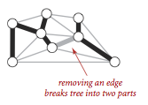
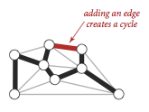
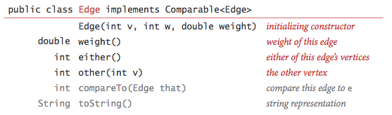
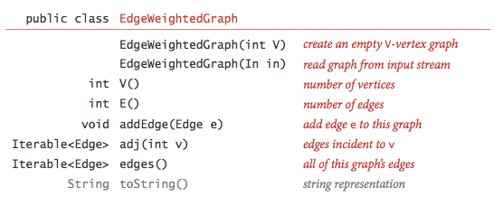
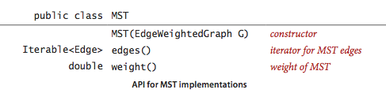
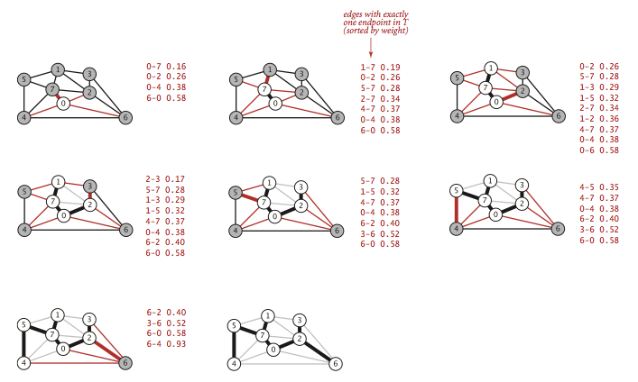
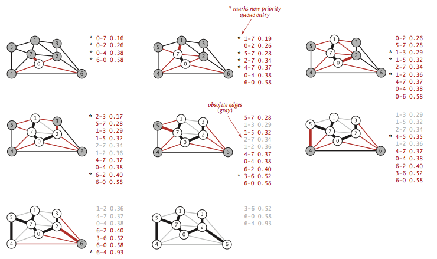

Minimum Spanning Trees
§ Minimum spanning tree.
An edge-weighted graph is a graph where we associate weights or costs with each edge. A minimum spanning tree (MST) of an edge-weighted graph is a spanning tree whose weight (the sum of the weights of its edges) is no larger than the weight of any other spanning tree.

§ Assumptions.
To streamline the presentation, we adopt the following conventions:
- The graph is connected. The spanning-tree condition in our definition implies that the graph must be connected for an MST to exist. If a graph is not connected, we can adapt our algorithms to compute the MSTs of each of its connected components, collectively known as a minimum spanning forest.
- The edge weights are not necessarily distances. Geometric intuition is sometimes beneficial, but the edge weights can be arbitrary.
- The edge weights may be zero or negative. If the edge weights are all positive, it suffices to define the MST as the subgraph with minimal total weight that connects all the vertices.
- The edge weights are all different. If edges can have equal weights, the minimum spanning tree may not be unique. Making this assumption simplifies some of our proofs, but all of our our algorithms work properly even in the presence of equal weights.
§ Underlying principles.
We recall two of the defining properties of a tree:
- Adding an edge that connects two vertices in a tree creates a unique cycle.
- Removing an edge from a tree breaks it into two separate subtrees.
 
A cut of a graph is a partition of its vertices into two disjoint sets. A crossing edge is an edge that connects a vertex in one set with a vertex in the other. We recall For simplicity, we assume all edge weights are distinct. Under this assumption, the MST is unique. Define cut and cycle. The following properties lead to a number of MST algorithms.
 Proposition. (Cut property)
Proposition. (Cut property)
Given any cut in an edge-weighted graph (with all edge weights distinct), the crossing edge of minimum weight is in the MST of the graph.

The cut property is the basis for the algorithms that we consider for the MST problem. Specifically, they are special cases of the greedy algorithm.
Proposition. (Greedy MST algorithm)
The following method colors black all edges in the the MST of any connected edge-weighted graph with V vertices: Starting with all edges colored gray, find a cut with no black edges, color its minimum-weight edge black, and continue until V-1 edges have been colored black.

§ Edge-weighted graph data type.
We represent the weighted edges using the following API:

The either() and other() methods are useful
for accessing the edge's vertices; the compareTo() method
compares edges by weight.
Edge.java is a straightforward
implementation.
We represent edge-weighted graphs using the following API:

We allow parallel edges and self-loops. EdgeWeightedGraph.java implements the API using the adjacency-lists representation.

§ MST API.
We use the following API for computing an MST of an edge-weighted graph:

We prepare some test data:
- tinyEWG.txt contains 8 vertices and 16 edges
- mediumEWG.txt contains 250 vertices and 1,273 edges
- 1000EWG.txt contains 1,000 vertices and 8,433 edges
- 10000EWG.txt contains 10,000 vertices and 61,731 edges
- largeEWG.txt contains one million vertices and 7,586,063 edges
§ Prim's algorithm.
Prim's algorithm works by attaching a new edge to a single growing tree at each step: Start with any vertex as a single-vertex tree; then add V-1 edges to it, always taking next (coloring black) the minimum-weight edge that connects a vertex on the tree to a vertex not yet on the tree (a crossing edge for the cut defined by tree vertices).

The one-sentence description of Prim's algorithm leaves unanswered a key question: How do we (efficiently) find the crossing edge of minimal weight?
- Lazy implementation.
We use a priority queue to hold the
crossing edges and find one of minimal weight.
Each time that we add an edge to the tree, we also add a vertex to the
tree. To maintain the set of crossing edges,
we need to add to the priority queue all edges from that vertex to
any non-tree vertex.
But we must do more: any edge connecting the
vertex just added to a tree vertex that is already on the priority queue now
becomes ineligible (it is no longer a crossing edge because
it connects two tree vertices).
The lazy implementation leaves such edges on the priority
queue, deferring the ineligibility test to when we remove them.
LazyPrimMST.java is an implementation of this lazy approach. It relies on the MinPQ.java priority queue.

- Eager implementation.
To improve the lazy implementation of Prim's algorithm, we might try
to delete ineligible edges from the priority queue, so that the
priority queue contains only the crossing edges.
But we can eliminate even more edges. The key is to note that our
only interest is in the minimal edge
from each non-tree vertex to a tree vertex. When we add a vertex v to
the tree, the only
possible change with respect to each non-tree vertex w is that adding
v brings w closer
than before to the tree. In short, we do not need to keep on the
priority queue all of the
edges from w to vertices tree—we just need to keep track of the
minimum-weight edge
and check whether the addition of v to the tree necessitates that we
update that minimum (because of an edge v-w that has lower weight),
which we can do as we process
each edge in s adjacency list. In other words, we maintain on the
priority queue just
one edge for each non-tree vertex: the shortest edge that connects it
to the tree.

PrimMST.java is an implementation of this eager approach. It relies on the IndexMinPQ.java indexed priority queue to perform the decrease-key operation.
Proposition.
Prim's algorithm computes the MST of any connected edge-weighted graph. The lazy version of Prim's algorithm uses space proportional to E and time proportional to E log E (in the worst case) to compute the MST of a connected edge-weighted graph with E edges and V vertices; the eager version uses space proportional to V and time proportional to E log V (in the worst case).
§ Kruskal's algorithm.
Kruskal's algorithm processes the edges in order of their weight values (smallest to largest), taking for the MST (coloring black) each edge that does not form a cycle with edges previously added, stopping after adding V-1 edges. The black edges form a forest of trees that evolves gradually into a single tree, the MST.

To implement Kruskal's algorithm, we use a priority queue to consider the edges in order by weight, a union-find data structure to identify those that cause cycles, and a queue to collect the MST edges. Program KruskalMST.java implements Kruskal's algorithm along these lines. It uses the helper MinPQ.java, UF.java, and Queue.java data types.
Proposition.
Kruskal's algorithm computes the MST of any connected edge-weighted graph with E edges and V vertices using extra space proportional to E and time proportional to E log E (in the worst case).